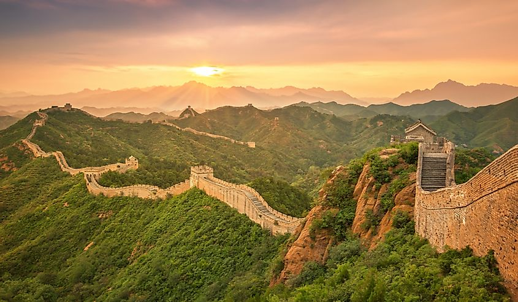
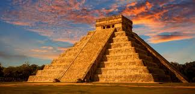
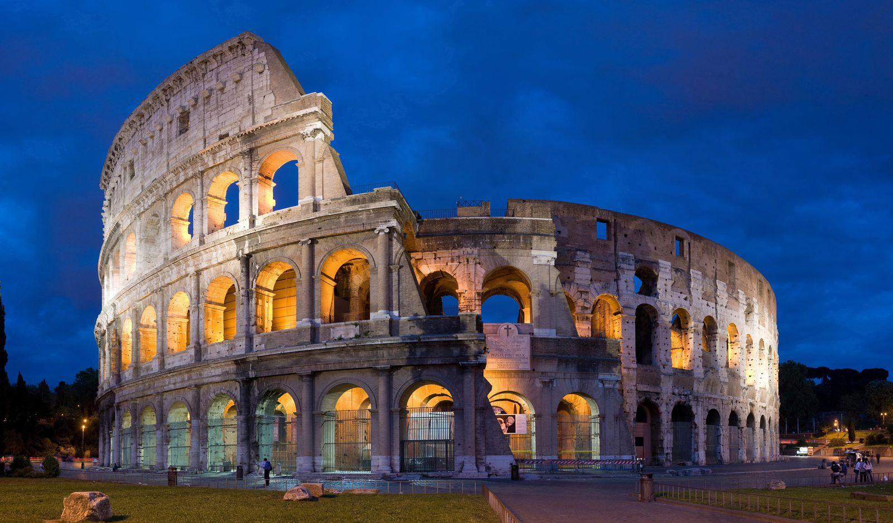
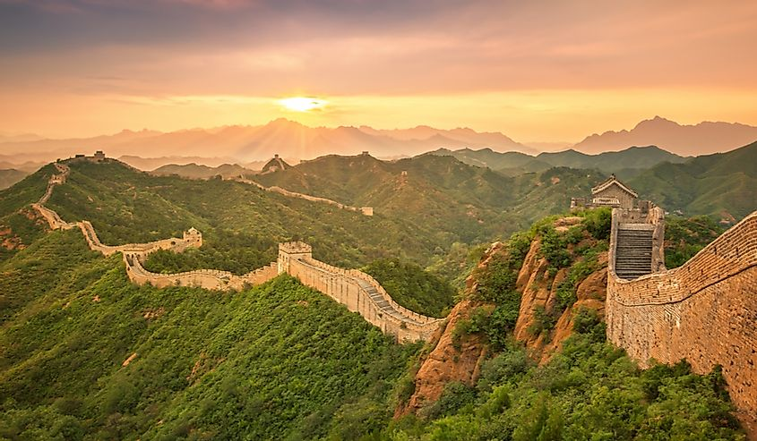
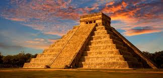
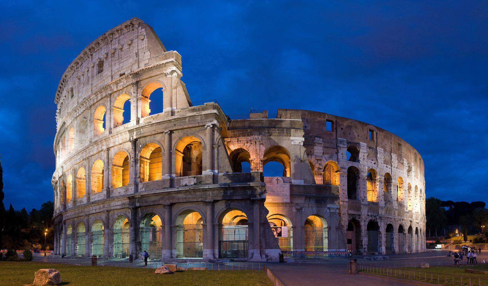

Seven Wonders of the World
Name
Country
City
Measurements
Age
Significance
Great Wall of China

Chichen Itza

Petra

Machu Picchu

Christ The Redeemer

Colosseum

Taj Mahal

Name |
Country |
City |
Measurements |
Age |
Significance |
|---|---|---|---|---|---|
Great Wall of China |
China | Huairou District | 13,171 miles | 2,300 years | The Great Wall of China is a series of fortifications that were built for protection |
Chichen Itza |
Mexico | Yucatan | 545 feet | 1,500 years | Chichen Itza is home to a number of architectural and natural wonders. It may have been a religious center. |
Petra
|
Jordan | Petra | 2.,657 feet | Built as early as 5th century BC | The beautiful rock-cut architecture and innovative water management system. |
Machu Picchu
|
Peru | Andes Mountains | 7,972 feet | Built in the 1450's. | Machu Picchu symbolizes the excellent technical skill, and productivity of the Inca Empire in its apogee. |
Christ The Redeemer
|
Brazil | Janeiro | 125 feet | 99 years | It was intended for Christ to be holding a globe in one hand and a cross in the other, rather than two open arms. |
Colosseum |
Italy | Rome | 159 feet tall | 1,951 years | The Colosseum stands today as a symbol of the power, genius, and brutality of the Roman Empire. |
Taj Mahal
|
India | Agra | 240 feet | 390 years | The Taj Mahal is the jewel of Muslim art in India and one of the universally admired masterpieces of the world's heritage. |